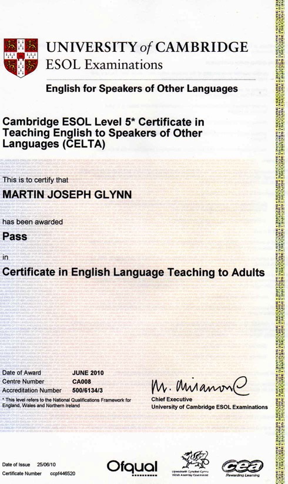

My name is Martin Glynn. I am an English conversation teacher from Canada. I have attended both Concordia and McGill Universities in Canada; in addition, I have a CELTA English teaching certificate from Cambridge University in the United Kingdom. I am a published author and Olympic athlete!
I have been teaching for more than ten years. I specialize in conversational English, phonetics and pronunciation, starting with children through intermediate, and advanced levels, business, and even IELTS test preparation. When teaching, my goal is to engage my students in an interesting and lively conversation based on their interests.
In my experience, most foreign students are very familiar with grammar but lack the pronunciation and vocabulary to hold a conversation with a native speaker. I can help you fix that!
Certificate from University of Cambridge:
